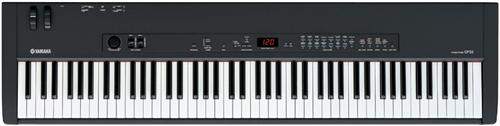

piano101 - my rig
Here's what I ended up with keyboard-wise... Yep, big piano/computer stand in the middle of the living room. New digital drum kit in the living room, too. Yes, I'm single... Big huge tv for PC monitor.Components
Yamaha cp-33

good weighted keys and flawless piano sound
Roland pcr-800
extra 5 octaves of lite keys and 10 sliders, 9 knobs, 25 buttons pitchbender, modwheel, channel pressure, program changer
CME gpp-3
plus the pedal that came with my cp-33 makes 4
I think this is discontinued now. But I've heard good things about the similar Roland RPU-3
Yamaha DTX 522 drum kit
PianoCheetah's SYN.exe gives me 3 millisec latency audio using .WAV files. But I mix in the cp-33's piano and my drum kit's sounds.
Ok, We're done. Time to go play some music :)
Time to learn a little 'bout piano practice?
home